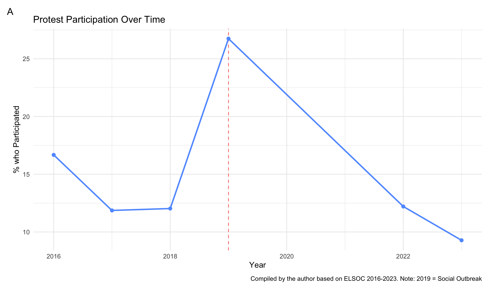
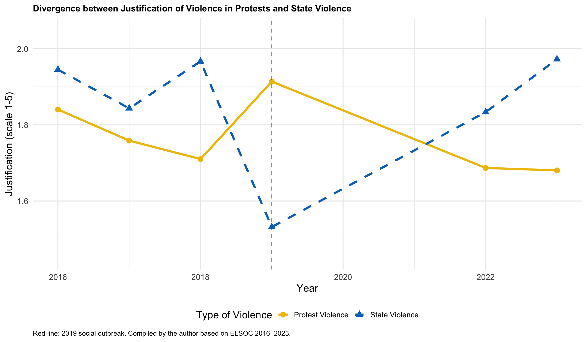
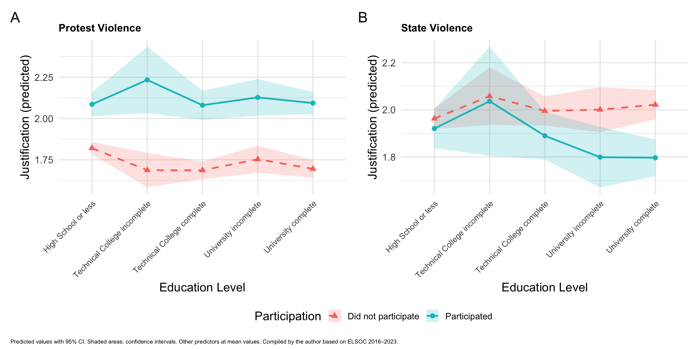
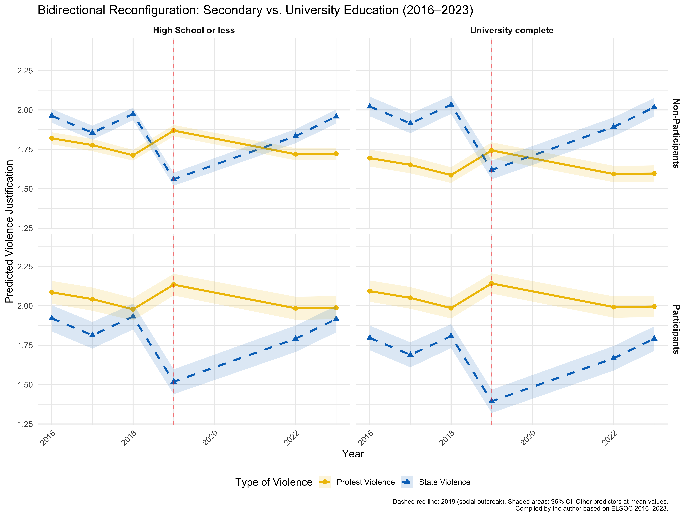

![]()

1 Introduction
18 October 2019 marked a turning point in Chile’s political history. What began as a mass refusal to pay fares on the Santiago metro — initiated by students in response to an increase in public transport fares — quickly became, within a matter of hours, the largest protest since the return to democracy (Somma et al., 2021). For several weeks, thousands of people took to the streets across the country, challenging both the neoliberal legacy of the dictatorship (Canales Cerón, 2022; Garcés, 2019; Araujo, 2022) as the historical limits of collective action (Somma et al., 2021; Cox et al., 2024; Pleyers, 2023). The so-called ‘Chilean Spring’ combined mass participation, broad-based social engagement and confrontational tactics on an unprecedented scale: from mass marches to road blockades, clashes with the Carabineros and attacks on public infrastructure (Rivera et al., 2025).
The government’s response was equally extraordinary. The government of then-President Sebastián Piñera declared a state of emergency and deployed military personnel onto the streets for the first time since the restoration of democracy (Somma et al., 2021; Thaler et al., 2023). The crackdown resulted in more than 8,000 victims of police violence, over 400 cases of eye injuries and at least 34 deaths, which, according to Amnesty International, constituted the most serious human rights crisis since the end of the dictatorship (Amnistía Internacional, 2020; Human Rights Watch, 2019; Rodríguez et al., 2021). This situation intensified media and political polarisation and placed a persistent question at the centre of public debate: when, and for whom, is political violence legitimate?
Both forms of violence are governed by different logics and have distinct effects on the dynamics of protests. State violence refers to repressive actions carried out by state agents — such as the police or the armed forces — with the aim of dispersing or demobilising protesters, a phenomenon that some scholars refer to as ‘police management of protests’ (Steinert-Threlkeld et al., 2022). Protesters’ violence, by contrast, refers to disruptive or destructive physical actions carried out by the protesters themselves during a demonstration. Beyond their origins, the two forms also differ in their effects: whilst state violence can lead to both mobilisation and demobilisation depending on its intensity, protester violence tends to systematically reduce the scale of protests by undermining their legitimacy and discouraging the participation of third parties (Steinert-Threlkeld et al., 2022).
Several studies have shown that the justification of violence during the uprising was not uniform. Disi Pavlic et al. (Disi Pavlic et al., 2025) show that acceptance of violence varies according to temporal, spatial and ideological proximity, whilst González and Le Foulon (Gonzalez et al., 2020) note that the most active protesters — young, educated and left-leaning — justified violence during the protests more frequently than those who remained on the sidelines of these events. This pattern runs counter to what one might expect, given the classical literature which associates education with greater acceptance of democratic norms and a rejection of violence (Dewey et al., 2024; Lipset, 1959; Nie et al., 1996). How, then, can we explain the fact that those with higher levels of education showed a greater willingness to justify violence during the cycle of mobilisation?
This study contributes new insights to the existing literature in two areas that have not been explored in previous research. Firstly, Disi Pavlic et al. (2025) document that acceptance of violence varies by proximity to protest and policing style, and note that these effects differ by ideology and prior experience — but their design treats education as a contextualizing covariate rather than as the primary analytical explanandum, and does not examine how educational attainment moderates the effect of participation itself. Our contribution is therefore not simply to add an interaction term: we place the education × participation combination at the analytical center and adjudicate between two competing mechanisms — attitudinal sorting versus experiential socialization — using within-between decomposition models that prior work in this area has not applied. Secondly, the existing literature has largely treated protest violence and state violence as independent outcomes. We show that their divergent trajectories among educated participants are not coincidental, but rather constitute a unified bidirectional phenomenon: protesters with a university education simultaneously legitimise protest violence and delegitimise state repression. This asymmetry is not apparent in models that examine each type of violence in isolation, and cannot be attributed solely to education; rather, it requires the specific combination of educational trajectories and protest participation. Our within-between analysis indicates this combination is more consistent with the sorting of attitudinally distinct individuals into protest than with their transformation through participation — though, as we show below, this conclusion holds more cleanly for protest violence than for state violence, where a partial within-person socialization effect also emerges among university-educated groups.
This hypothesis has clear theoretical roots. The resource model (Brady et al., 1995; Verba et al., 2002) argues that political participation and attitudes depend on differential access to resources — education, time, money and civic skills — such that higher levels of education are associated with more conventional attitudes and greater commitment to institutional norms. However, much of the literature on political attitudes and conflict has extended this hypothesis beyond its original parameters, arguing that the effects of resources such as education depend on the context of action and on individuals’ participatory experiences. McAdam (D. McAdam et al., 2009) demonstrated that high-risk activism has lasting ‘biographical consequences’: it alters interpretative frameworks, collective identities and moral judgements regarding the legitimacy of action. Participation in protests exposes people to alternative discourses, fosters group solidarity and, in repressive contexts, can bring them into direct confrontation with state violence (Snow et al., 1988; Olcese et al., 2014).
These experiences not only reshape political attitudes, but also influence the way in which the effects of education are reflected in the justification of violence (Dahlum, 2019). Therefore, participation in protests does not influence attitudes in a uniform manner; rather, it activates differentiated potentials for change that originate in biographical trajectories and repertoires of collective action (Doug McAdam, 1989; Tarrow, 1998; Snow et al., 1988). In this regard, the justification of political violence constitutes a central dimension for the health of democracies: when broad sections of the public perceive violence as a legitimate means of collective action, the normative foundations of the democratic order are eroded and the scope for radicalisation and conflict widens (Muller et al., 1990; Norris, 2011). Understanding which factors determine these attitudes — and under what conditions they change — is therefore essential to understanding the stability and quality of contemporary political systems.
This study proposes a conditional model for understanding attitudes towards political violence. The effects of education depend on participation in protests and on the type of violence under analysis: among non-participants, higher education is associated with lower violence justification; among protesters, this pattern reverses for protest violence while inverting again for state violence, producing a bidirectional configuration concentrated among the most educated and mobilized. Two competing mechanisms could generate this pattern. The cognitive amplification account holds that higher education provides interpretative resources that, when activated by the experience of mobilisation, enable individuals to construct legitimising frameworks for disruptive violence and to reject state repression. The attitudinal sorting account holds that protest participation selects university-educated individuals who already hold these configurations, rather than transforming their attitudes. These mechanisms have distinct within-person signatures, which we assess using within-between (REWB) decomposition models. The results, as documented below, favour the sorting account for protest violence, while revealing a partial socialization process for state violence specifically among university-educated groups.
However, it is important to recognise that this is not a static phenomenon. Attitudes towards political violence vary over time depending on the intensity of the conflict cycle: the levels and forms of justification observed before, during and after the outbreak differ substantially, giving rise to attitudinal trajectories that are reconfigured as the context of mobilisation evolves (Disi Pavlic, 2021). Addressing this temporal dimension is therefore not a secondary methodological refinement, but a necessary condition for capturing the dynamic nature of the phenomenon. The central question of this study is, therefore: how do education and participation in protests interact to shape attitudes towards political violence in the Chilean context over time?
The aim of this study is to contribute to two lines of research. Firstly, to the literature on education and political attitudes, by assessing the ‘civilising effect’ in relation to the participatory context (Nie et al., 1996; Weakliem, 2002). Secondly, it contributes to the literature on political participation and socialisation (Doug McAdam, 1989; Giugni, 2004), by examining whether participation interacts with cognitive (educational) resources in complex ways, thereby shaping individuals’ interpretative frameworks. Overall, this study aims to shed light on the foundations of the legitimisation of violence during the period of political conflict in Chile, documenting a bidirectional moral configuration among educated protesters and assessing the degree to which it reflects sorting versus experiential change. The Chilean case offers an exceptional empirical framework for this purpose. The 2019 social uprising not only triggered mass participatory dynamics but also condensed, within a short period, an unusual combination of structural discontent, institutional exhaustion and state repression perceived as illegitimate — conditions which, taken together, allow us to examine precisely how educational trajectories and participation jointly shape attitudes towards political violence. Analysing this cycle of conflict therefore enables us to empirically test a more general thesis: that the moral configurations which characterise protest participants are not simply a product of mobilisation but reflect, in substantial part, who chooses to mobilise and what attitudinal predispositions they bring to that choice.
2 Theoretical Background
2.1 Justification of Violence
The willingness to justify violence in protest contexts is a complex phenomenon, one that distinguishes between attitudes toward violence exercised by protesters and that employed by state forces (Marx, 1998; Disi Pavlic et al., 2025). Protester violence tends to be evaluated as destabilizing to the political order and therefore illegitimate by definition, while state violence—protest policing—is framed as a functional measure for maintaining social order (Davenport et al., 2011; Tilly, 2003), granting it a presumption of institutional justification that protester violence lacks (Disi Pavlic et al., 2025).
This normative asymmetry has empirical consequences: civic judgment does not operate neutrally, but rather against differentiated expectations depending on which actor exercises force (Jämte et al., 2024). Approval of police violence may increase when directed against unpopular groups (Ellner, 2003), but the same violence erodes state legitimacy when perceived as unjust (Górecki, 2013; Pérez-Liñán et al., 2010). Conversely, protester violence can shift from illegitimate to justifiable when the state is perceived as the original aggressor (Disi Pavlic et al., 2025).
2.2 Policing and Its Effects on Citizens’ Attitudes
Research shows that policing style has substantive effects on how citizens evaluate violence in protests. Escalated force can trigger radicalization and escalation when perceived as disproportionate (Koopmans, 1993; Francisco, 1995), eroding the legitimacy of both the police and the government (Bonner et al., 2022). The literature distinguishes between a negotiated management model, which prioritizes communication and minimal use of force, and an escalated force model, based on coercion (Della Porta et al., 2007); and more recently, between active policing—direct intervention involving chemical agents, projectiles, and arrests—and passive policing—selective monitoring and containment (Disi Pavlic et al., 2025).
Drawing on procedural justice theory (Tyler et al., 2003), when police conduct is perceived as unjust, institutional legitimacy is eroded and the justification of resistance increases (Monica M. Gerber et al., 2017; Sunshine et al., 2003). Crucially, these effects are not uniform: they vary according to ideology and prior protest experience (Disi Pavlic et al., 2025). In Chile, the legitimacy crisis of the Carabineros during the 2019 uprising illustrates this mechanism: the widespread reports of human rights violations normalized the justification of protest violence as legitimate self-defense (Mónica M. Gerber et al., 2023; Carrasco Paillamilla et al., 2023). What is particularly relevant for this study is that direct experience with policing—through participation in protests—constitutes one of the primary triggers of attitudinal change.
2.3 Education and Attitudes toward Violence in Protests
The classical “civilizing effect” argument (Lipset, 1959; ALMOND et al., 1963) holds that education fosters the internalization of democratic norms and reduces the propensity to accept political violence, by developing cognitive skills that enable individuals to adopt moderate positions (Converse, 1972; Nie et al., 1996), promoting values of tolerance and institutional respect (Siegel, 1981), and strengthening subjective political efficacy (Dyrstad et al., 2020). Under this paradigm, the justification of violence is a residue of educational deficit.
However, this model faces significant empirical limitations. Studies with robust causal designs show that the direct effects of education on political attitudes are largely explained by self-selection (Kam et al., 2008; Berinsky et al., 2011). Moreover, counterintuitive evidence—such as the presence of highly educated individuals in violent organizations—suggests that the effects of education are context-contingent (Krueger et al., 2003; Fair et al., 2006).
This has prompted a reconceptualization: rather than a universal inhibitory effect, education operates as a conditional cognitive amplifier (Nie et al., 1996; Sabucedo et al., 2018). Its primary function is not to instill tolerance, but to provide cognitive sophistication—the analytical tools to construct complex moral frameworks that can both delegitimize and legitimize violence depending on situational context. In settings of high inequality and institutions perceived as unjust, this sophistication enables individuals to frame violence as an exceptional yet principled response consistent with notions of justice (della Porta, 2017; Varlık et al., 2025).
One candidate activation mechanism, under the cognitive amplification account, is direct participation in protests. The situated experience of protesting exposes individuals to state repression, to elaborated ideological narratives that distinguish between types of violence (Tilly, 2003; Benford et al., 2000), and to identity pressures that reconfigure the relative weight of different moral considerations (Polletta et al., 2001; Van Stekelenburg et al., 2013). More educated individuals possess greater capacity to manage these tensions through cognitive compartmentalization: they can maintain general democratic values while constructing situational exceptions that frame protest violence as “legitimate self-defense” (Tetlock, 1986; Disi Pavlic et al., 2025). Less educated individuals, by contrast, tend toward more consistent positions that do not vary as much with context (Krueger et al., 2003).
In this way, the cognitive amplification account predicts that the effect of education is conditional on protest experience: among non-participants, the civilizing effect would operate by reducing the justification of violence; among participants, cognitive sophistication would be activated to tactically legitimize what would otherwise be rejected in the abstract.
This gives rise to what may be termed (H1) the education paradox effect, whereby:
H1a: Among individuals who do not participate in protests, higher educational attainment is associated with lower justification of violence in demonstrations, consistent with the “civilizing effect” of education.
H1b: Among individuals who do participate in protests, the effect of education reverses: university-educated individuals show greater justification of violence in demonstrations compared to those with lower levels of education.
Under this account, the explanation would lie in the fact that education fosters more sophisticated political thinking, but operating differently depending on participation: non-participants would draw on this capacity to reinforce their commitment to nonviolent democracy and abstract norms of tolerance, while participants would employ that same sophistication to construct ideological frameworks that allow them to tactically legitimize violence as a valid political instrument in specific protest contexts, without necessarily abandoning their broader democratic values.
2.4 Protest Participation and Attitudinal Change
The classical literature on political participation has tended to treat it as the result of pre-existing characteristics: people participate because they already hold certain attitudes, resources, and predispositions (Verba et al., 2002). More recent research, however, has challenged this linear model, showing that participation not only reflects prior orientations but transforms them (Doug McAdam, 1989; Passy et al., 2018). McAdam’s seminal work (Doug McAdam, 1989) on the 1964 Freedom Summer project was pioneering in documenting this effect: comparing participants with a control group of similar characteristics who ultimately did not attend, he found that those who did participate underwent lasting transformations in their political and moral dispositions, regardless of their initial predispositions.
Since then, the literature has identified two main mechanisms through which participation produces attitudinal change (Passy et al., 2018; Crossley, 2003; Pavlic, 2021). The first is exposure to new cognitive frameworks: social movements elaborate interpretive schemas that allow for the reframing of conflict, justice, and violence (Snow et al., 1988; Benford et al., 2000; Lioy, 2024). Participation embedded in these environments can produce frame transformation, whereby previously illegitimate practices—such as certain forms of violence—are recast as “legitimate self-defense” or “necessary resistance.” The second mechanism is direct experience with state repression, which generates a moral reframing: what was previously “illegitimate violence” becomes “defensive violence,” while police action ceases to be perceived as order and comes to be seen as structural violence (Tyler et al., 2003; Monica M. Gerber et al., 2017).
Both mechanisms operate asymmetrically with respect to the actor exercising violence. Exposure to repression tends to increase the justification of protester violence by validating narratives of resistance, while simultaneously reducing the justification of state violence by eroding its perceived legitimacy (Disi Pavlic et al., 2025; Jämte et al., 2024). Evidence from the Chilean case is consistent with this pattern: participation in the 2019 social uprising increased acceptance of confrontational tactics among protesters, particularly among those who experienced intense forms of state coercion (Rivera et al., 2025; Disi Pavlic et al., 2025).
2.5 Heterogeneity by Education
This hypothesized transformative effect, if it exists, would not be homogeneous, but rather mediated by participants’ social and educational position (Giugni, 2004; Passy et al., 2018). As argued in the previous section, individuals with higher education possess greater cognitive sophistication to process and rearticulate complex moral frameworks (Nie et al., 1996). In participatory contexts, this capacity is activated: more educated individuals have greater resources to internalize the justificatory frameworks circulating within social movements and to construct situational exceptions that legitimize protest violence without abandoning broader democratic values (Tetlock, 1986; Sabucedo et al., 2018). Less educated individuals, by contrast, tend toward more stable positions that do not vary as much in response to participatory experience (Krueger et al., 2003).
It should be noted, however, that these effects may be temporally unstable. Rivera et al. (Rivera et al., 2025) and Disi Pavlic et al. (Disi Pavlic et al., 2025) document that attitudinal changes induced by participation tend to attenuate over time, suggesting that biographical transformation depends not only on the participatory experience itself, but on the continuity of activism and the structural conditions that sustain it.
The central hypothesis is that the transformative effects of participation are not uniform, but rather depend on the interaction between educational socialization and protest experience. Education provides the cognitive capacity to construct sophisticated moral justifications; participation, in turn, provides the emotional and symbolic conditions that make such elaboration necessary. The result is a bidirectional reconfiguration of moral frameworks: those who participate reinterpret state violence as illegitimate and protester violence as legitimate. Given the foregoing, we expect:
H2a: University-educated individuals who participate in protests show greater justification of violence exercised by protesters, compared to university-educated non-participants.
H2b: The same participating university-educated individuals show lower justification of violence exercised by the state, compared to university-educated non-participants.
Under the socialization account, participation in protests would thus function not as a passive reflection of pre-existing attitudes, but as a process of moral and political relearning, in which more educated individuals—precisely because of their cognitive sophistication—would be best positioned to coherently reformulate their normative principles in light of experience. In this way, collective action becomes the space in which the tensions between education, structural inequality, and the legitimacy of political violence are rearticulated.
3 The Chilean Case: From Structural Discontent to Justification
3.2 The Legitimacy Crisis and the Dynamics of Intergroup Violence
To understand why violence became an acceptable resource for broad sectors of the population, it is essential to analyze the dynamic interaction between protesters and security forces. Political violence during this period was not a unidirectional phenomenon, but the result of a profound crisis of institutional legitimacy. Empirical evidence gathered during the conflict shows that the perception of procedural injustice in the conduct of the Carabineros—characterized by the excessive use of force and degrading treatment—drastically eroded the moral authority of the police (Mónica M. Gerber et al., 2023).
There is a significant inverse relationship between legitimacy and violence: the lower the perceived legitimacy of the police, the greater the justification of violence by protesters as a valid tool for “social change” (Mónica M. Gerber et al., 2023). This finding is crucial for the argument developed here, as it indicates that state repression, far from restoring order, generated a backlash effect that morally validated radicalization. By perceiving authority as unjust and illegitimate, citizens came to reframe civilian violence not as criminality, but as an act of resistance and the reclamation of rights. Chile thus configured itself during this period as a scenario of reciprocal intergroup violence, in which police violence for social control and civilian violence for political change mutually reinforced each other, breaking down the normative barriers that had traditionally contained conflict.
3.3 The Educational Paradox: From the Promise of Mobility to the Politicization of Discontent
With respect to education, the Chilean case challenges classical modernization theories that linearly associate educational expansion with social pacification and democratic consolidation. While the country experienced a rapid massification of higher education—moving from a gross enrollment rate of 16.8% in 1990 to 59% in 2012—this process unfolded under a radical market logic that incubated new conflicts (Bellei et al., 2014). Enrollment expansion was not driven by the state, but by the proliferation of private institutions and financing mechanisms such as the State-Guaranteed Student Loan (CAE), resulting in 78% of higher education expenditure being borne by families—the highest share in the OECD (Bellei et al., 2014).
This structure generated a “welfare paradox”: rather than acting as a social equalizer, education reproduced stratification and imposed a heavy debt burden on working-class households and emerging middle sectors. Far from producing conformism, this tension transformed students into critical political actors. As Donoso et al. (Donoso et al., 2023) argue, the 2011 student movement not only placed education on the public agenda but generated a “repoliticization” of citizenship, demonstrating that higher levels of education provide the cognitive and civic resources necessary to challenge the status quo. Education in Chile thus operated as a catalyst for mobilization, with the most educated sectors acting not as buffers against conflict, but as vanguards that articulated a structural critique of the neoliberal model (Joignant et al., 2024).
4 Data and Methods
4.1 Data
This study uses data from the Longitudinal Social Study of Chile (ELSOC), a panel survey implemented by the Center for Social Conflict and Cohesion Studies (COES) that collects information on the country’s urban adult population. The survey is designed to examine individuals’ attitudes, perceptions, and behaviors regarding issues of social conflict and cohesion. Its panel design allows the same individuals to be tracked over time, offering a unique window into the evolution of Chilean society. The survey has been administered annually since 2016, with the exception of 2020 due to the COVID-19 pandemic, accumulating seven waves of data (2016, 2017, 2018, 2019, 2021, 2022, and 2023). Critically for the present analysis, the 2019 wave was conducted after the onset of the social uprising of October 18, making it the first wave to capture attitudes formed in the context of mass mobilization and state repression — rendering it analytically interpretable as a post-estallido measurement rather than a pre-event baseline.
ELSOC employs a probabilistic, multi-stage cluster sampling design covering both major urban centers and medium and small cities across the country. The sampling frame was stratified proportionally by urban population size (in six categories), with households randomly selected from 1,067 census blocks. The target population includes men and women aged 18 to 75 residing in private dwellings.
For the analyses reported here, and after applying an inclusion criterion requiring respondents to have participated in at least three waves and having valid data on all analytical variables, the analytical sample comprises between 15,103 and 15,110 observations nested within 3,382–3,383 individuals across six waves (2016–2019, 2022–2023). The 2021 wave was excluded because the violence justification items were not administered in that round. The small variation in N across models reflects differential item-level missingness in each dependent variable. The survey, its methodological manuals, and datasets are publicly available through the COES portal https://coes.cl/elsoc/ and the Harvard Dataverse repository https://dataverse.harvard.edu/dataverse/elsoc.
4.2 Variables
4.2.1 Dependent Variables: Justification of Political Violence
Two indices were constructed to measure attitudes toward political violence, capturing the justification of violence exercised by different types of actors in specific political contexts.
The Protest Violence Justification Index is composed of the average of two items measuring the degree to which respondents justify disruptive actions carried out by social actors in contexts of mobilization:
A group of striking workers blocking the street with barricades to demand compliance with their labor rights.
Students throwing stones at the Carabineros during a march for education.
Each item was measured on a 5-point Likert scale ranging from 1 = “Never justified” to 5 = “Always justified.” The index was calculated as the arithmetic mean of both items when the respondent answered at least one of them, yielding a continuous scale from 1 to 5 where higher values indicate greater justification of protest violence. The internal consistency of the index is satisfactory, with a Cronbach’s alpha of 0.82 in the analytical sample, indicating that the items capture a common latent construct.
The State Violence Justification Index is composed of the average of two items measuring the justification of violence exercised by the Carabineros de Chile (law enforcement) in public order control contexts:
The Carabineros using violence to repress a peaceful demonstration.
The Carabineros forcibly evicting people who have occupied buildings or universities.
Each item was measured on the same 5-point scale. The index was calculated as the mean of both items (requiring a response to at least one), also yielding a continuous scale from 1 to 5. The correlation between the two items is r = 0.58 (p < 0.001), indicating that they measure related but distinguishable aspects of attitudes toward police violence.
It is important to note that these two indices capture conceptually distinct forms of political violence: “bottom-up” violence exercised by mobilized social actors versus “top-down” violence exercised by state agents. As shown in the correlation matrix in Table 1, the two indices are negatively correlated (r = −0.23, p < 0.001), suggesting that justifying one type of violence tends to be associated with lower justification of the other, though the correlation is far from perfect. This empirical distinction validates the strategy of analyzing both types of violence separately.
4.2.2 Independent Variables: Education and Protest Participation
Respondent education was operationalized as a five-level categorical variable based on the highest level of education attained:
Complete secondary education or less
Incomplete tertiary non-university education (begun but not completed)
Complete tertiary non-university education (technical-professional degree or equivalent)
Incomplete university education (begun but not completed)
Complete university education (undergraduate or postgraduate degree)
This categorization is treated as an unordered factor, using “complete secondary education or less” as the reference category. The decision not to treat education as an ordinal variable reflects prior evidence suggesting that the effects of education on political attitudes are not necessarily linear, and that there are qualitative differences between technical and university education that go beyond years of schooling (Nie et al., 1996).
Protest participation was operationalized as a dichotomous variable indicating whether the respondent participated in demonstrations, marches, or protests during the previous 12 months (1 = Participated, 0 = Did not participate), based on the question: “During the last 12 months, have you participated in demonstrations or marches?” This variable captures retrospectively reported participation and is therefore subject to potential recall and social desirability biases, although prior evidence suggests that protest participation reports have reasonable validity when the reference period is relatively short (Walgrave et al., 2014).
4.2.3 Control Variables
All models include the following control variables to reduce confounding and improve the precision of the estimates:
Age: In years at the time of each wave (continuous variable, centered at the mean).
Gender: Dichotomous variable (1 = Woman, 0 = Man).
Political ideology: Self-placement scale from 0 (far left) to 10 (far right), standardized to mean 0 and standard deviation 1.
Survey wave: Year fixed effects (indicator variables for each survey year, with 2016 as the reference category) to control for period-specific shifts in attitudes over the study period (2016–2023). This specification imposes no parametric functional form on the temporal trajectory, which is appropriate given the non-linear attitudinal shock associated with the 2019 uprising visible in the descriptive data.
4.3 Analytical Strategy
The longitudinal nature of the data implies that the same individuals are observed on multiple occasions over time. This data structure—in which Level 1 observations (measurements over time) are nested within Level 2 individuals—violates one of the fundamental assumptions of standard regression models: the independence of observations (Snijders et al., 2012). Responses from the same individual across waves are highly likely to be correlated, as they reflect stable characteristics of that person (personality, deep-seated values, prior formative experiences) that consistently shape their attitudes over time.
Ignoring this within-individual temporal dependence would yield biased estimates (standard errors that are too small), artificially inflating statistical significance and leading to invalid conclusions (Raudenbush et al., 2010; Gelman et al., 2021). Multilevel models (also referred to as hierarchical linear models, mixed-effects models, or variance component models) offer an explicit solution to this problem by simultaneously modeling both between-individual heterogeneity and within-individual dependence over time (Singer et al., 2003). As Hox et al. (Hox et al., 2018) note, these models allow the total variation to be decomposed into its structural components and the uncertainty of parameters to be correctly estimated in the presence of intra-group dependence.
The general model equations for Level 1 (observation over time) and Level 2 (individual) are as follows:
Level 1 (within-individual)
y_{tj} = \beta_{0j} + \beta_{1j} X_{tj} + \varepsilon_{tj}
where:
- y_{tj}: Justification of violence for individual j at time t.
- X_{tj}: Level 1 variables (time), such as participation in protests, age, etc.
- \varepsilon_{tj}: Residual error at the observation level.
Level 2 (between-individual)
\beta_{0j} = \gamma_{00} + \gamma_{01} Z_j + u_{0j}
\beta_{1j} = \gamma_{10}
where:
- \gamma_{00}: General intercept (overall mean).
- \gamma_{01}: Effect of Level 2 predictors (between individuals).
- \gamma_{10}: Fixed effect of Level 1 predictors (within individuals).
- Z_j: Predictors that do not vary over time (education, gender).
- u_{0j}: Random effect of the intercept for individual j.
Integrated Model
y_{tj} = \gamma_{00} + \gamma_{01} Z_j + \gamma_{10} X_{tj} + \sum_{k \in \mathcal{Y}} \delta_k D_{kt} + u_{0j} + \varepsilon_{tj}
where \mathcal{Y} = \{2017, 2018, 2019, 2022, 2023\} and D_{kt} is an indicator equal to 1 if observation t belongs to year k (2016 as the reference category). This model decomposes the total variance into two components: variance between individuals (\sigma^2_u, captured by the random intercepts) and variance within individuals over time (\sigma^2_\varepsilon, residual error). The intraclass correlation coefficient (ICC) quantifies the proportion of total variance attributable to differences between individuals. The parameters \delta_k capture year-specific deviations from the 2016 baseline, accommodating the non-linear temporal dynamics visible in Figure 2 without imposing a parametric form on the trajectory.
4.3.1 Interaction Models
Interaction between Education and Participation
To test the central hypotheses of this study, which predict that the effects of education on the justification of violence are contingent upon participation in protests, we estimate models that include multiplicative interaction terms:
\begin{aligned} y_{tj} = \gamma_{00} + \sum_{k=1}^{4} \gamma_{0k} \text{Education}_{kj} + \gamma_{10} \text{Participation}_{tj} + \sum_{k=1}^{4} \gamma_{1k} (\text{Education}_{kj} \times \text{Participation}_{tj}) + \\ \sum_{k \in \mathcal{Y}} \delta_k D_{kt} + \text{Controls} + u_{0j} + \varepsilon_{tj} \end{aligned}
Given that education is a categorical variable with 5 levels (4 dummies), this model estimates 4 interaction coefficients (\gamma_{11}, \gamma_{12}, \gamma_{13}, \gamma_{14}), one for each educational level relative to the reference category.
The interpretation of interaction terms in multilevel models follows the standard logic: the interaction coefficient represents how much the effect of participation in protests on the justification of violence changes when moving from one educational category to another. Marginal effects plots (predicted values) are used to visualize these interactions in an intuitive manner.
4.3.2 Choice of Distribution and Link Function
The main dependent variable is the continuous violence justification index (scale 1–5). Although technically ordinal (discrete ordered levels), treating it as a continuous variable is justified on three methodological and substantive grounds. First, the indices average responses across multiple items (2 for protest violence, 2 for state violence), producing a more continuous and approximately normal distribution in the sample. Second, prior work in psychology and political science has shown that Likert scales with 5 or more points can be treated as continuous without substantial loss of information when multiple items are averaged (Norman, 2010; Lubke et al., 2004). Third, using continuous variables allows effects to be interpreted in terms of average changes on the justification scale, which is more intuitive and better captures subtle gradations in attitudes.
The main models are therefore estimated using Generalized Linear Mixed Models (GLMM) with a Gaussian (normal) distribution and identity link function, incorporating random intercepts by individual to account for the hierarchical structure of the data. This specification is equivalent to a standard multilevel linear regression model and is estimated via restricted maximum likelihood (REML), which produces unbiased estimates of the variance components in finite samples (Raudenbush et al., 2010).
4.4 Software and Reproducibility
All statistical analyses were conducted in R (version 4.3.1) using the glmmTMB package (Brooks et al., 2017) for the estimation of generalized mixed models, ggeffects (Lüdecke, 2018) for the calculation of marginal effects and adjusted predictions, and ggplot2 (Wickham, 2016) for the visualization of results. Complete analysis scripts—including code for data cleaning, variable construction, model estimation, and figure generation—are available in an OSF project, for transparency and replicability of the reported findings.
5 Results
This section presents the findings on the factors shaping the justification of violence in the context of social protest in Chile.
5.1 Descriptive Statistics
5.1.1 Justification of Violence by Education Level
The patterns observed in Table 1 reveal a notable trend. Among non-participants, higher education levels tend to be associated with lower justification of protest violence, with means declining from approximately 1.90 to 1.80. However, this trend reverses among those who do participate: participants with university education display the highest justification levels, reaching means around 2.29 and 2.27. This differentiated effect of education appears to be specific to protest violence, as, by contrast, the justification of state violence shows a much more stable pattern, with considerably smaller variation across educational levels.
5.1.2 Temporal Evolution: Justification of Violence and Protest Participation (2016–2023)
The temporal pattern analysis of Figure 1 shows a result consistent with the observed protest cycle context. In 2019 — the year of the social outbreak — the highest average protest participation rate is recorded, reflecting the intensity of mobilization. In the post-2019 period, although participation declines from its peak, it remains at slightly higher levels than those observed before 2019, until its fall between 2021 and 2023, where it reaches its lowest average across the entire reported cycle.

Figure 2 reveals a striking temporal inversion in the moral hierarchy surrounding political violence. Pre-2019 (2016–2018), state violence consistently received higher justification than protest violence at the aggregate level (gap of −0.09 to −0.26 points), suggesting a baseline in which coercive force by state agents was viewed more leniently than disruptive actions by protesters. In 2019, this hierarchy reverses dramatically: protest violence rises to its sample-wide peak (~1.91) while state violence falls to its minimum (~1.53), producing a gap in the opposite direction (+0.38 points, protest > state). This reversal reflects the impact of the uprising — both the surge in protest participation and the delegitimization of state repression in a context of widely perceived police brutality.
In the post-2019 period (2022–2023), the pre-2019 hierarchy reasserts itself: state violence justification rises progressively while protest violence declines, with state again exceeding protest justification by 0.15–0.29 points. This pattern suggests that 2019 constituted a critical but temporary moral inversion — the uprising briefly reversed the default hierarchy, but the post-uprising period has seen a reversion in the broader population toward the baseline pattern in which state coercion is viewed more permissively than collective disruptive action. The aggregate convergence therefore reflects the attitudinal trajectories of the non-participating majority more than those of habitual protesters, whose patterns are captured in the interaction models that follow.
5.2 Regression Analyses
Table 2 presents two main models guiding the analysis of this study. Model 1 examines the effects of education and protest participation on protest violence justification, and Model 2 evaluates those same effects on state violence justification. Both models include random effects by individual and controls for age, gender, ideology, and year.
The results reveal differentiated patterns depending on the type of violence. For protest violence, participation shows a consistent positive effect, increasing justification by approximately 0.36 points. By contrast, for state violence, the direct effect of participation is negative and highly significant, showing that protest participants do not more readily justify police repression.
The controls operate consistently: right-wing ideology reduces justification of protest violence (~-0.03 per point on the scale) but increases it for state violence (~+0.05). Women reject state violence more (~-0.13) with no differences on protest violence. The year 2019 shows the most dramatic contrast: a moderate increase in protest violence justification but a sharp fall in state violence justification (~-0.40), reflecting the impact of the social outbreak on attitudes toward police repression.
The models in Table 3 reveal that the effect of participation varies significantly by education level. For protest violence, the interactions between education and participation are positive, indicating that the legitimizing effect of participating is stronger among more educated individuals. A person with complete university education who participates increases their justification by 0.40 points versus 0.27 for secondary education, evidencing the “educational paradox”: education reduces justification among non-participants (-0.13***) but amplifies the effect of participation.
For state violence, the pattern reverses completely. The interactions are negative (university incomplete: -0.16; university complete: -0.18**), indicating that only the combination of university education + participation generates significant rejection of repression (total effect: -0.22 points). Education alone (+0.06, ns) or participation alone (-0.04, ns) are insufficient; it is their interaction that activates the differentiated rejection.
The bidirectional reconfiguration (legitimizing protests, rejecting repression) is clearest among university-educated participants, consistent with the dual moral framework requiring both higher education and direct mobilization experience.
5.2.2 The Education “Paradox Effect”

Figure 4 shows both the “educational paradox” (H1a–H1b) and the bidirectional reconfiguration (H2a–H2b) through direct comparison of violence types. Panel A shows the pattern for protest violence: among non-participants, higher education is associated with lower justification (descending red line from ~1.95 at secondary education to ~1.75 at university complete), consistent with the civilizing effect. Among participants, however, the direction reverses (ascending blue line from ~2.20 at secondary education to ~2.35 at technical college incomplete), suggesting that mobilization experience is associated with higher justification even among the most educated groups.
Panel B reveals the contrasting pattern for state violence, consistent with H2a–H2b. Among non-participants, both lines remain nearly parallel across education levels with no meaningful gradient, indicating that education alone does not generate a critical framework toward repression. Among participants, the blue line declines markedly at university levels — the only educational group for which participation is associated with lower state violence justification (university complete: −0.18**; university incomplete: −0.16). Read together, the two panels are consistent with the bidirectionality of the reconfiguration: university-educated participants simultaneously show higher protest violence justification and lower state violence justification, consistent with the dual moral framework predicted in H2a–H2b.
5.3 Bidirectional Reconfiguration of Violence Justification (Protest Violence vs. State Violence)
The interaction models (Model 1b and Model 2b) reveal the bidirectional dynamic predicted in H2a–H2b (university-educated). H2a is supported: for protest violence, university education is associated with lower justification among non-participants (-0.13***), but participation is associated with an increase (+0.27***) that is larger at higher education levels (technical college incomplete: +0.28*; university complete: +0.13**), consistent with the nullification of the civilizing effect. H2b is supported in terms of the observed association: for state violence, education alone (+0.06, ns) and participation alone (-0.04, ns) show no independent effects, but their negative interactions produce significant lower justification among university-educated individuals (incomplete: -0.16*; complete: -0.18***), indicating that the combination of university education and participation is associated with lower acceptance of state repression. As shown in the within-between analysis (Section 5.2.1), however, the within-person component of this state violence effect is non-significant, suggesting that this pattern predominantly reflects pre-existing attitudinal differences among habitual protesters rather than a socialization process generated by participation itself.
The controls are consistent with the impact of the 2019 outbreak: moderate increase in protest justification (+0.05*) but sharp fall in state violence (-0.40***), substantially reconfiguring attitudes toward police repression. Ideology operates in opposite directions: right-wing ideology reduces justification of protests (-0.03***) but increases that of state violence (+0.05***). Women reject state violence more (-0.13***) with no differences in protests. This pattern indicates that the bidirectional reconfiguration predicted in H2a–H2b is most pronounced among those who combine university education with direct experience of mobilization. The protest violence component of this reconfiguration involves both socialization and selection, while the state violence component appears driven primarily by selection — a distinction documented in the within-between models.

Figure 5 visualizes the temporal dynamics of the bidirectional reconfiguration predicted in H2a–H2b through the direct contrast between secondary and university education — the two polar cases that most clearly reveal whether the dual moral framework requires university socialization.
Among non-participants (top row), both education levels show parallel lines between protest and state violence throughout the entire period, confirming that participation is a necessary condition for the bidirectional reconfiguration: without mobilization experience, neither educational level generates the divergence between violence types predicted in H2a–H2b.
Among participants (bottom row), the contrast is clear. Secondary-educated participants show elevated protest violence justification post-2019 (consistent with H2a) but near-parallel lines with state violence, which does not support H2b: they show higher acceptance of tactical violence but without a corresponding rejection of state repression. University-educated participants display the pattern consistent with the full dual framework: (1) a sustained elevated yellow line (~2.0–2.1), at odds with the civilizing effect and consistent with H2a; (2) a notable decline of the blue line in 2019 from ~1.75 to ~1.35 (-0.40***), consistent with H2b; (3) a post-2019 divergence of ~0.7 points between both violence types. This direct comparison is consistent with H2a and H2b being jointly observable only under the combination of university education and mobilization experience.
6 Discussion and Conclusions
As outlined at the outset, this article departs from a fundamental question raised by the 2019 social uprising: why and how did sectors traditionally associated with political moderation and institutional attachment come to legitimize disruptive forms of political violence? The findings complicate classical linear conceptions of education’s role. The “civilizing effect” hypothesis holds — but only for those who observe politics from a distance. Among protesters, the expected pattern inverts. Crucially, however, within-between decomposition suggests this inversion is driven primarily by sorting rather than transformation: protest participation does not produce stronger attitudinal shifts among the educated, but reveals that those who habitually mobilize already hold qualitatively different political orientations. What our study documents is not that protest transforms the educated, but that it surfaces who they already were.
The classical literature in political sociology has long defended the “civilizing effect” hypothesis (Lipset, 1959; Nie et al., 1996), premised on the idea that education fosters tolerance and rejection of violence as a mode of political action. The findings of this study confirm this relationship, but with a critical qualification: it holds only for those who observe politics from a distance.
Among non-participants, higher education is indeed associated with lower justification of violence. However, once protest participation is introduced, this relationship reverses — consistent with Hypothesis 1 (H1). University-educated participants not only justify violence more than their non-mobilized peers; they reach the highest justification levels in the entire sample, surpassing even those with the lowest levels of formal education.
This pattern is consistent with a cognitive amplification mechanism: the cultural capital of higher education may provide conceptual resources for constructing legitimizing frameworks (Snow et al., 1988) that render tactical violence compatible with democratic values in contexts of confrontation. However, the within-between decomposition detailed in Section 5.2.1 places a critical constraint on this interpretation. For protest violence, university-educated participants show no greater within-person socialization effect than lower-educated groups — they are not more responsive to participation’s transformative influence. Cognitive amplification through the experience of mobilization is therefore unlikely to be the primary driver of the educational paradox. The more parsimonious account, consistent with the evidence, is that university education concentrates individuals with pre-existing political orientations that are subsequently expressed in participation and attitudes alike.
This selection account is not simply an alternative that “cannot be ruled out” — the within-between interaction analysis (Section 5.2.1) provides direct evidence that the education × between-person effect dominates the education × within-person effect for protest violence. University-educated individuals who habitually participate enter each wave already holding higher baseline protest violence justification, rather than incrementally developing it through participation. Whether the pre-existing orientations that drive this sorting reflect campus-based political socialization that predates any individual wave, network embeddedness in activist communities, or deeper biographical factors remains beyond the scope of the present data. Future research should use pre-participation attitudinal measures or panel designs that begin before individuals enter mobilization cycles to better isolate the formative role of university contexts from the selection into protest itself.
The sorting account raises a further question about the developmental origins of the pre-existing orientations that distinguish habitual protesters. One important dimension concerns the distinction between those actively embedded in university contexts (enrolled students) and those who hold university credentials but have left campus (graduates or dropouts). The literature on university socialization (Gurin et al., 2002) suggests that formative political orientations are not solely a product of accumulated educational credentials, but of prolonged immersion in spaces of deliberation, ideological diversity, and student activism characteristic of campus life.
If the attitudinal configurations that select university-educated individuals into protest are shaped primarily through campus-based socialization, then enrolled students would be expected to display qualitatively different patterns from those who have transitioned to the labor market. This distinction is especially relevant in Chile, where the university student movement has historically been a central actor in social protest (2006, 2011, 2019). Future research should disaggregate the “university-educated” category into enrolled students, recent graduates, and longer-term graduates, in order to assess at what biographical moment the sorting process between future participants and non-participants diverges and whether the educational paradox attenuates with distance from campus.
Political participation thus appears to surface rather than produce the moral frameworks of educated mobilizers. The higher protest violence justification and lower state violence tolerance that characterize university-educated protesters may reflect orientations already consolidated through prior socialization — campus-based, network-mediated, or biographical — rather than attitudes reshaped by the experience of mobilization itself. This sorting, however, is context-dependent: it is most visible during the 2019 cycle, when protest activity peaked and attitudinal configurations were most sharply expressed. This mechanism-level finding extends the contribution of Disi Pavlic et al. (2025), who document that acceptance of violence varies by proximity to protest and policing style — and note that these effects differ by ideology and prior experience — but treat education as a contextualizing covariate and do not examine how educational attainment moderates the participation effect or adjudicate whether the resulting pattern reflects attitudinal sorting or experiential socialization. Perhaps the most substantive finding for understanding contemporary Chilean conflict is the documentation of a bidirectional reconfiguration of attitudes. Contrary to the view that the uprising generated generalized anomie or indiscriminate validation of all forms of violence, the data reveal the emergence of a highly sophisticated dual moral framework — particularly among educated participants.
The data show that protesters — and in particular those who combine university education with active participation — operated under a logic of selective delegitimization during the most intense moment of the conflict. In 2019, while showing higher justification of disruptive violence as a political tool (presumably in response to a perceived institutional vacuum), they simultaneously showed lower justification of state repression. This pattern is consistent with procedural justice theory (Tyler, 2006): when police conduct is perceived as unjust or disproportionate, state legitimacy erodes and protest resistance acquires moral valence.
An important qualification to this interpretation emerges from the within-between analysis. The REWB models (Table 3) show that for protest violence, both socialization and selection operate simultaneously, though selection is stronger. The interaction REWB models (Table 4) sharpen this finding considerably: the education × within-person interaction for university completers is negligible (β = .004, ns), while the education × between-person interaction is large and significant (β = .377, p < .001). The educational paradox in protest violence is most consistent with a selection account — highly educated protesters appear to enter each wave already holding more permissive attitudes toward disruptive violence, rather than being more responsive to participation’s transformative influence. The “cognitive amplification” narrative, which posits that university education equips individuals to reinterpret violence as legitimate resistance when they mobilize, receives no support from within-person analysis.
For state violence, the interaction model reveals a more differentiated picture. The within-null documented in Model 3b (β = −.044, ns) is an average that conceals education-specific heterogeneity: university-educated groups show significant within-person reductions in state violence justification when they participate (total within-person effects of −.173 for university incomplete and −.097 for university complete, both p < .05). Participation therefore does produce some genuine within-person attitudinal shift for the most educated — a partial socialization process absent in lower-education groups. Nevertheless, the dominant mechanism remains sorting: between-person effects are substantially larger than within-person effects across all education levels, and the between-person effect is further amplified for university completers. Whether this partial socialization reflects specific exposure to police conduct in protest contexts, ongoing campus-based political discussion, or accumulated exposure to movement frames remains an open question for future research.
The temporal dynamics of this effect reveal a more complex picture than a permanent moral fracture. At the aggregate level, the 2019 reversal of the pre-existing hierarchy (protest justification exceeding state justification for the first time) did not persist: post-2019 data (2022–2023 waves) show state violence justification rising progressively while protest violence declines, re-establishing the pre-2019 pattern in which state coercion is viewed more permissively than collective disruptive action across the full sample. This aggregate reversion reflects predominantly the trajectory of non-participants, who form the majority of respondents. Among habitual participants — particularly university-educated ones — the bidirectional moral framework (higher protest, lower state) shows more persistence, though also partial convergence as the intensity of mobilization subsided.
This temporal pattern is consistent with models of context effects, in which acute political crises generate temporary attitudinal realignments that attenuate once collective effervescence declines (Snow et al., 2014). The post-2019 normalization in aggregate violence attitudes suggests that the uprising produced a conjunctural moral inversion rather than a durable restructuring of the rules governing legitimate force. Non-participants appear to have reverted toward pre-2019 baselines, while habitual protesters with higher education maintain relatively more stable configurations — though even among them, the 2019 peak has not been sustained.
It is important to note, however, that convergence does not imply a full return to the pre-uprising status quo. The 2022–2023 trajectories still differ from the pre-2019 period, and the experience of the uprising has left an identitarian mark on participants, particularly among the more educated sectors. The study shows that, during the critical moment of 2019, political violence was legitimized primarily by the most educated and socially integrated participants — challenging conventional readings that attribute political violence to marginality. Yet this legitimization was predominantly conjunctural, responding to the specific context of police repression and institutional crisis, rather than consolidating as a permanent cultural transformation of the moral rules governing the use of force.
6.1 Limitations
Several limitations of this study should be acknowledged. First, protest participation is operationalized as retrospective self-report over the preceding twelve months, which introduces potential recall bias and social desirability effects. Although prior evidence suggests that short-reference-period participation reports have reasonable validity (Walgrave et al., 2014), the measure may be systematically inflated among respondents who identify more strongly with social movements, creating a correlation between the measurement error and the predictor itself.
Second, the inclusion criterion requiring at least three completed waves may introduce attrition bias. Respondents who remained in the panel across multiple waves are likely to differ systematically from those who dropped out — potentially in terms of stability, civic engagement, or educational attainment — which could affect the generalizability of findings to the broader Chilean adult population.
Third, while the within-between (REWB) decomposition addresses selection on time-stable characteristics, it does not eliminate the possibility of time-varying confounding. Shocks or life events that occur simultaneously with changes in participation status — such as job loss, relocation, exposure to police violence at a specific event, or entry into activist networks — could produce spurious within-person associations between participation and attitudes. The partial within-person socialization effect documented for state violence among university-educated groups should therefore be interpreted as a plausible pattern rather than a causal estimate.
Fourth, the language used in this paper to describe patterns (“reveals”, “confirms”, “demonstrates”) should be read as shorthand for conditional claims about observed associations in observational data rather than as assertions of causal identification. The study’s design identifies the joint distribution of education, participation, and violence attitudes longitudinally, but falls short of the experimental or quasi-experimental standards required for causal inference. These limitations define an agenda for future research: panel designs with pre-participation baselines, matching or instrumental variable approaches, and administrative records of participation would each address specific sources of bias that observational self-report data cannot fully resolve.
7 References
ALMOND, G. A. and VERBA, S., The Civic Culture, Princeton University Press, accessed November 24, 2025, from https://www.jstor.org/stable/j.ctt183pnr2, 1963.
Amnistía Internacional, Ojos Sobre Chile: Violencia Policial y Responsabilidad de Mando Durante El Estallido Social, AMR 22/3133/2020, 2020.
Araujo, K., The Circuit of Detachment in Chile: Understanding the Fate of a Neoliberal Laboratory, Cambridge, United Kingdom ; New York, NY: Cambridge University Press, 2022.
Bell, A. and Jones, K., Explaining Fixed Effects: Random Effects Modeling of Time-Series Cross-Sectional and Panel Data, Political Science Research and Methods, vol. 3, no. 1, pp. 133–53, accessed June 25, 2026, January 2015. DOI: 10.1017/psrm.2014.7
Bellei, C., Cabalin, C. and Orellana, V., The 2011 Chilean Student Movement Against Neoliberal Educational Policies, Studies in Higher Education, vol. 39, no. 3, pp. 426–40, accessed November 24, 2025, March 2014. DOI: 10.1080/03075079.2014.896179
Benford, R. D. and Snow, D. A., Framing Processes and Social Movements: An Overview and Assessment, Annual Review of Sociology, vol. 26, pp. 611–39, accessed November 24, 2025, from https://www.jstor.org/stable/223459, 2000.
Berinsky, A. J. and Lenz, G. S., Education and Political Participation: Exploring the Causal Link, Political Behavior, vol. 33, no. 3, pp. 357–73, accessed November 24, 2025, from https://www.jstor.org/stable/41488848, 2011.
Bonner, M. D. and Dammert, L., Constructing Police Legitimacy During Protests: Frames and Consequences for Human Rights, Policing and Society, vol. 32, no. 5, pp. 629–45, accessed November 24, 2025, May 2022. DOI: 10.1080/10439463.2021.1957887
Brady, H. E., Verba, S. and Schlozman, K. L., Beyond SES: A Resource Model of Political Participation, American Political Science Review, vol. 89, no. 2, pp. 271–94, accessed April 8, 2026, June 1995. DOI: 10.2307/2082425
Brooks, M., E., Kristensen, K., Benthem, van, J., Magnusson, A., Berg, C., W., Nielsen, A., Skaug, H., J., Mächler, M. and Bolker, B., M., glmmTMB Balances Speed and Flexibility Among Packages for Zero-inflated Generalized Linear Mixed Modeling, The R Journal, vol. 9, no. 2, p. 378, accessed November 24, 2025, 2017. DOI: 10.32614/RJ-2017-066
Canales Cerón, M., La pregunta de Octubre: fundación, apogeo y crisis del Chile neoliberal, Santiago de Chile: LOM ediciones, 2022.
Carrasco Paillamilla, S. F. and Disi Pavlic, R., Predictors of Perceptions of Human Rights Violations During the Chilean Social Outburst of 2019, Frontiers in Psychology, vol. 14, p. 1133428, accessed November 24, 2025, April 2023. DOI: 10.3389/fpsyg.2023.1133428
Converse, P., Change in the American Electorate, The Human Meaning of Social Change/Russell Sage Foundation, 1972.
Cox, L., González, R. and Le Foulon, C., The 2019 Chilean Social Upheaval: A Descriptive Approach, Journal of Politics in Latin America, vol. 16, no. 1, pp. 68–89, accessed November 24, 2025, April 2024. DOI: 10.1177/1866802X231203747
Crossley, N., From Reproduction to Transformation: Social Movement Fields and the Radical Habitus, Theory, Culture & Society, vol. 20, no. 6, pp. 43–68, accessed November 24, 2025, December 2003. DOI: 10.1177/0263276403206003
Dahlum, S., Students in the Streets: Education and Nonviolent Protest, Comparative Political Studies, vol. 52, no. 2, pp. 277–309, accessed April 8, 2026, February 2019. DOI: 10.1177/0010414018758761
Davenport, C., Soule, S. A. and Armstrong, D. A., Protesting While Black? The Differential Policing of American Activism, 1960 to 1990, American Sociological Review, vol. 76, no. 1, pp. 152–78, accessed November 24, 2025, from https://www.jstor.org/stable/25782184, 2011.
della Porta, D. Ed., Global Diffusion of Protest: Riding the Protest Wave in the Neoliberal Crisis, Amsterdam University Press, accessed November 24, 2025, from https://www.jstor.org/stable/j.ctt1zkjxq0, 2017.
Della Porta, D. and Fillieule, O., Policing Social Protest, in The Blackwell Companion to Social Movements, D. A. Snow S. A. Soule and H. Kriesi, Eds., Oxford, UK: Blackwell Publishing Ltd, accessed November 24, 2025, pp. 217–41, 2007.
Dewey, J. and Tampio, N., Democracy and Education, New York: Columbia University Press, 2024.
Disi Pavlic, R., The Nearness of Youth: Spatial and Temporal Effects of Protests on Political Attitudes in Chile, Latin American Politics and Society, vol. 63, no. 1, pp. 72–94, accessed April 8, 2026, February 2021. DOI: 10.1017/lap.2020.33
Disi Pavlic, R., Medel, R. M., Bargsted, M. and Somma, N. M., Justification of Violence, Ideological Preferences, and Exposure to Protests: Causal Evidence from the 2019 Chilean Social Unrest, Social Forces, p. soaf102, accessed November 24, 2025, July 2025. DOI: 10.1093/sf/soaf102
Dyrstad, K. and Hillesund, S., Explaining Support for Political Violence, The Journal of Conflict Resolution, vol. 64, no. 9, pp. 1724–53, accessed November 24, 2025, from https://www.jstor.org/stable/48631689, 2020.
Ellner, S., The Contrasting Variants of the Populism of Hugo Chávez and Alberto Fujimori, Journal of Latin American Studies, vol. 35, no. 1, pp. 139–62, accessed June 24, 2026, February 2003. DOI: 10.1017/S0022216X02006685
Fair, C. C. and Shepherd, B., Who Supports Terrorism? Evidence from Fourteen Muslim Countries, Studies in Conflict & Terrorism, vol. 29, no. 1, pp. 51–74, accessed November 24, 2025, January 2006. DOI: 10.1080/10576100500351318
Francisco, R. A., The Relationship Between Coercion and Protest: An Empirical Evaluation in Three Coercive States, The Journal of Conflict Resolution, vol. 39, no. 2, pp. 263–82, accessed November 24, 2025, from https://www.jstor.org/stable/174413, 1995.
Garcés, M., October 2019: Social Uprising in Neoliberal Chile, Journal of Latin American Cultural Studies, vol. 28, no. 3, pp. 483–91, accessed November 24, 2025, July 2019. DOI: 10.1080/13569325.2019.1696289
Gelman, A. and Hill, J., Data Analysis Using Regression and Multilevel/Hierarchical Models, Cambridge: Cambridge Univ. Press, 2021.
Gerber, Monica M. and Jackson, J., Justifying Violence: Legitimacy, Ideology and Public Support for Police Use of Force, Psychology, Crime & Law, vol. 23, no. 1, pp. 79–95, accessed November 24, 2025, January 2017. DOI: 10.1080/1068316X.2016.1220556
Gerber, Mónica M., Figueiredo, A., Sáez, L. and Orchard, M., Legitimidad, Justicia y Justificación de La Violencia Intergrupal Entre Carabineros y Manifestantes En Chile, Psykhe (Santiago), vol. 32, pp. 0–0, 2023.
Gonzalez, R. and Morán, C. L. F., The 2019–2020 Chilean Protests: A First Look at Their Causes and Participants, International Journal of Sociology, vol. 50, no. 3, pp. 227–35, accessed November 24, 2025, May 2020. DOI: 10.1080/00207659.2020.1752499
Górecki, M. A., Electoral Context, Habit-Formation and Voter Turnout: A New Analysis, Electoral Studies, vol. 32, no. 1, pp. 140–52, accessed June 24, 2026, March 2013. DOI: 10.1016/j.electstud.2012.09.005
Gurin, P., Dey, E., Hurtado, S. and Gurin, G., Diversity and Higher Education: Theory and Impact on Educational Outcomes, Harvard Educational Review, vol. 72, no. 3, pp. 330–67, accessed March 23, 2026, September 2002. DOI: 10.17763/haer.72.3.01151786u134n051
Hox, J. J., Moerbeek, M. and Schoot, R. van de, Multilevel Analysis: Techniques and Applications, New York, NY: Routledge, Taylor & Francis Group, 2018.
Human Rights Watch, Chile: Llamado Urgente a Una Reforma Policial Tras Las Protestas., November 2019.
Jämte, J., Lundstedt, M. and Wennerhag, M., When Do Radical Flanks Use Violence? Conditions for Violent Protest in Radical Left-Libertarian Activism in Sweden, 1997–2016, Terrorism and Political Violence, vol. 36, no. 5, pp. 679–98, accessed June 24, 2026, July 2024. DOI: 10.1080/09546553.2023.2189966
Joignant, A., Somma, N., Garretón, M., and Capos, T., Informe Anual Observatorio de Conflictos 2020, Centro de Estudios de Conflicto y Cohesión Social (COES), 2020.
Kam, C. D. and Palmer, C. L., Reconsidering the Effects of Education on Political Participation, The Journal of Politics, vol. 70, no. 3, pp. 612–31, accessed November 24, 2025, July 2008. DOI: 10.1017/S0022381608080651
Koopmans, R., The Dynamics of Protest Waves: West Germany, 1965 to 1989, American Sociological Review, vol. 58, no. 5, p. 637, accessed November 24, 2025, from https://www.jstor.org/stable/2096279, October 1993. DOI: 10.2307/2096279
Krueger, A. B. and Malečková, J., Education, Poverty and Terrorism: Is There a Causal Connection?, The Journal of Economic Perspectives, vol. 17, no. 4, pp. 119–44, accessed November 24, 2025, from https://www.jstor.org/stable/3216934, 2003.
Lioy, A., “I Would Prefer Not To”: Establishing the Missing Link Between Invalid Voting and Public Protest in Latin America, Latin American Politics and Society, vol. 66, no. 1, pp. 106–32, accessed June 25, 2026, February 2024. DOI: 10.1017/lap.2023.29
Lubke, G. H. and Muthén, B. O., Applying Multigroup Confirmatory Factor Models for Continuous Outcomes to Likert Scale Data Complicates Meaningful Group Comparisons, Structural Equation Modeling: A Multidisciplinary Journal, vol. 11, no. 4, pp. 514–34, accessed November 24, 2025, October 2004. DOI: 10.1207/s15328007sem1104_2
Lüdecke, D., Ggeffects: Tidy Data Frames of Marginal Effects from Regression Models, Journal of Open Source Software, vol. 3, no. 26, p. 772, accessed November 24, 2025, June 2018. DOI: 10.21105/joss.00772
Marx, G. T., Policing Protest, University of Minnesota Press, accessed November 24, 2025, from https://www.jstor.org/stable/10.5749/j.ctttv1tv, 1998.
McAdam, D. and Brandt, C., Assessing the Effects of Voluntary Youth Service: The Case of Teach for America, Social Forces, vol. 88, no. 2, pp. 945–69, accessed November 24, 2025, December 2009. DOI: 10.1353/sof.0.0279
McAdam, Doug, The Biographical Consequences of Activism, American Sociological Review, vol. 54, no. 5, p. 744, accessed November 24, 2025, from https://www.jstor.org/stable/2117751, October 1989. DOI: 10.2307/2117751
Muller, E. N. and Weede, E., Cross-National Variation in Political Violence: A Rational Action Approach, Journal of Conflict Resolution, vol. 34, no. 4, pp. 624–51, accessed November 24, 2025, December 1990. DOI: 10.1177/0022002790034004003
Nie, N. H., Junn, J. and Stehlik-Barry, K., Education and Democratic Citizenship in America, Chicago: University of Chicago Press, 1996.
Norman, G., Likert Scales, Levels of Measurement and the “Laws” of Statistics, Advances in Health Sciences Education, vol. 15, no. 5, pp. 625–32, accessed November 24, 2025, December 2010. DOI: 10.1007/s10459-010-9222-y
Norris, P., Democratic Deficit: Critical Citizens Revisited, Cambridge University Press, accessed June 24, 2026, 2011.
Olcese, C., Saunders, C. and Tzavidis, N., In the Streets with a Degree: How Political Generations, Educational Attainment and Student Status Affect Engagement in Protest Politics, International Sociology, vol. 29, no. 6, pp. 525–45, accessed April 8, 2026, November 2014. DOI: 10.1177/0268580914551305
Passy, F. and Monsch, G.-A., Biographical Consequences of Activism, in The Wiley Blackwell Companion to Social Movements, D. A. Snow S. A. Soule H. Kriesi and H. J. McCammon, Eds., Wiley, accessed November 24, 2025, pp. 499–514, 2018.
Pavlic, R. D., The Nearness of Youth, Latin American Politics and Society, vol. 63, no. 1, pp. 72–94, accessed November 24, 2025, from https://www.jstor.org/stable/27116370, 2021.
Pérez-Liñán, A. S. and Pérez-Liñán, A. S., Presidential Impeachment and the New Political Instability in Latin America, New York, NY: Cambridge University Press, 2010.
Pleyers, G., El Estallido Chileno a La Luz de La Década Global de Los Movimientos Sociales, Polis, vol. 22, no. 65, May 2023. DOI: http://dx.doi.org/10.32735/s0718-6568/2023-n65-1868
Polletta, F. and Jasper, J. M., Collective Identity and Social Movements, Annual Review of Sociology, vol. 27, no. 1, pp. 283–305, accessed November 24, 2025, August 2001. DOI: 10.1146/annurev.soc.27.1.283
Raudenbush, S. and Bryk, A. S., Hierarchical Linear Models: Applications and Data Analysis Methods, Thousand Oaks, Calif.: Sage Publ, 2010.
Rivera, S., Severino, F. and Visconti, G., Exposure to Protests and Support for Different Forms of Violence: Evidence from the 2019 Social Outburst in Chile, Research & Politics, vol. 12, no. 3, p. 20531680251355242, accessed November 24, 2025, July 2025. DOI: 10.1177/20531680251355242
Rodríguez, Á., Peña, S., Cavieres, I., Vergara, M. J., Pérez, M., Campos, M., Peredo, D., et al., Ocular Trauma by Kinetic Impact Projectiles During Civil Unrest in Chile, Eye, vol. 35, no. 6, pp. 1666–72, accessed November 24, 2025, June 2021. DOI: 10.1038/s41433-020-01146-w
Sabucedo, J.-M., Dono, M., Alzate, M. and Seoane, G., The Importance of Protesters’ Morals: Moral Obligation as a Key Variable to Understand Collective Action, Frontiers in Psychology, vol. Volume 9 - 2018, 2018.
Siegel, H., Kohlberg, Moral Adequacy, and the Justification of Educational Interventions, Educational Theory, vol. 31, no. 3–4, pp. 275–84, accessed November 24, 2025, October 1981. DOI: 10.1111/j.1741-5446.1981.tb00970.x
Singer, J. D. and Willett, J. B., Applied Longitudinal Data Analysis: Modeling Change and Event Occurrence, Oxford University PressNew York, accessed November 24, 2025, 2003.
Snijders, T. A. B. and Bosker, R. J., Multilevel Analysis: An Introduction to Basic and Advanced Multilevel Modeling, Los Angeles, Calif.: SAGE, 2012.
Snow, D. A. and Benford, R. D., Ideology, Frame Resonance, and Participant Mobilization, International Social Movement Research, vol. 1, pp. 197–218, 1988.
Snow, D. A. and Moss, D. M., Protest on the Fly: Toward a Theory of Spontaneity in the Dynamics of Protest and Social Movements, American Sociological Review, vol. 79, no. 6, pp. 1122–43, accessed June 24, 2026, December 2014. DOI: 10.1177/0003122414554081
Somma, N. M., Bargsted, M., Disi Pavlic, R. and Medel, R. M., No Water in the Oasis: The Chilean Spring of 2019–2020, Social Movement Studies, vol. 20, no. 4, pp. 495–502, accessed November 24, 2025, July 2021. DOI: 10.1080/14742837.2020.1727737
Steinert-Threlkeld, Z. C., Chan, A. M. and Joo, J., How State and Protester Violence Affect Protest Dynamics, The Journal of Politics, vol. 84, no. 2, pp. 798–813, accessed April 8, 2026, April 2022. DOI: 10.1086/715600
Sunshine, J. and Tyler, T. R., The Role of Procedural Justice and Legitimacy in Shaping Public Support for Policing, Law & Society Review, vol. 37, no. 3, pp. 513–48, accessed November 24, 2025, from https://www.jstor.org/stable/1555077, 2003.
Tarrow, S. G. Ed., Power in Movement: Social Movements and Contentious Politics, Cambridge [England] New York: Cambridge University Press, 1998.
Tetlock, P. E., A Value Pluralism Model of Ideological Reasoning., Journal of Personality and Social Psychology, vol. 50, no. 4, pp. 819–27, accessed November 24, 2025, April 1986. DOI: 10.1037/0022-3514.50.4.819
Thaler, K. M., Mueller, L. and Mosinger, E., Framing Police Violence: Repression, Reform, and the Power of History in Chile, The Journal of Politics, vol. 85, no. 4, pp. 1198–1213, accessed November 24, 2025, October 2023. DOI: 10.1086/724967
Tilly, C., The Politics of Collective Violence, Cambridge University Press, accessed November 24, 2025, 2003.
Tyler, T. R., Restorative Justice and Procedural Justice: Dealing with Rule Breaking, Journal of Social Issues, vol. 62, no. 2, pp. 307–26, accessed November 24, 2025, June 2006. DOI: 10.1111/j.1540-4560.2006.00452.x
Tyler, T. R. and Blader, S. L., The Group Engagement Model: Procedural Justice, Social Identity, and Cooperative Behavior, Personality and Social Psychology Review, vol. 7, no. 4, pp. 349–61, accessed November 24, 2025, November 2003. DOI: 10.1207/S15327957PSPR0704_07
Varlık, S., Akpınar, S., Akpınar, Ö. and Görünü, R. M., Education as an Antidote to Violence and Social Inequality, Humanities and Social Sciences Communications, accessed November 24, 2025, November 2025. DOI: 10.1057/s41599-025-06192-x
Verba, S., Schlozman, K. L. and Brady, H. E., Voice and Equality: Civic Voluntarism in American Politics, Cambridge, Mass.: Harvard Univ. Press, 2002.
Walgrave, S. and Wouters, R., The Missing Link in the Diffusion of Protest: Asking Others, American Journal of Sociology, vol. 119, no. 6, pp. 1670–1709, accessed November 24, 2025, from https://www.jstor.org/stable/10.1086/676853, 2014. DOI: 10.1086/676853
Weakliem, D. L., The Effects of Education on Political Opinions: An International Study, International Journal of Public Opinion Research, vol. 14, no. 2, pp. 141–57, accessed November 24, 2025, June 2002. DOI: 10.1093/ijpor/14.2.141
Wickham, H., Ggplot2, Cham: Springer International Publishing, accessed June 24, 2026, 2016.